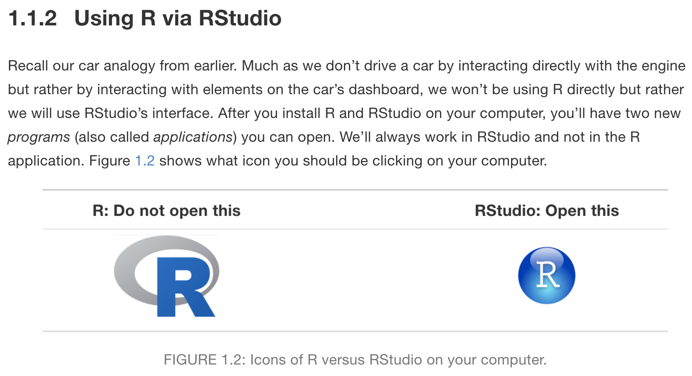
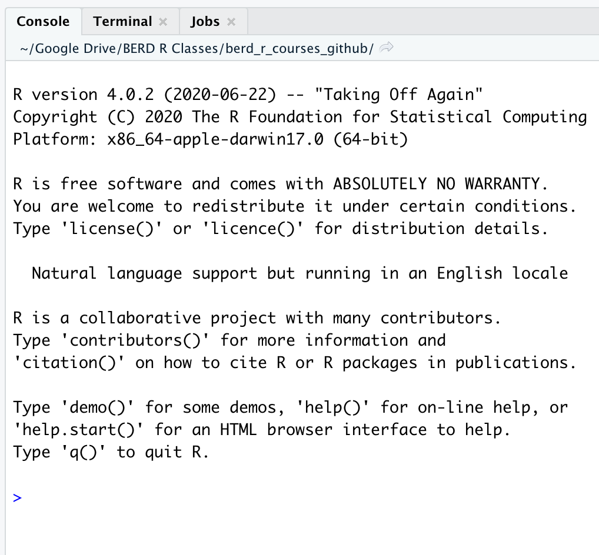
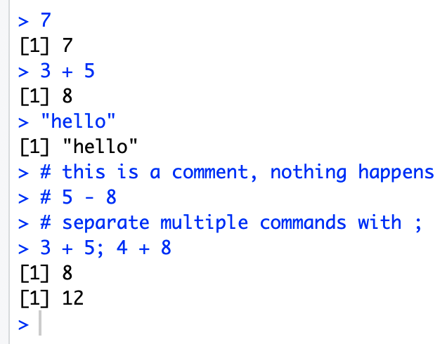

10^2[1] 1003 ^ 7[1] 21876/9[1] 0.66666679-43[1] -34
Read more about RStudio’s layout in Section 3.4 of “Getting Used to R, RStudio, and R Markdown” (Ismay and Kennedy 2016)
When you first open R, the console should be empty.

Typing and executing code in the console

10^2[1] 1003 ^ 7[1] 21876/9[1] 0.66666679-43[1] -344^3-2* 7+9 /2[1] 54.5The equation above is computed as \[4^3 − (2 \cdot 7) + \frac{9}{2}\]
Variables are used to store data, figures, model output, etc.
= or <-
<- is preferableAssign just one value:
x = 5
x[1] 5x <- 5
x[1] 5Assign a vector of values
:a <- 3:10
a[1] 3 4 5 6 7 8 9 10b <- c(5, 12, 2, 100, 8)
b[1] 5 12 2 100 8Math using variables with just one value
x <- 5
x[1] 5x + 3[1] 8y <- x^2
y[1] 25Math on vectors of values:
element-wise computation
a <- 3:6
a[1] 3 4 5 6a+2; a*3[1] 5 6 7 8[1] 9 12 15 18a*a[1] 9 16 25 36hi <- "hello"
hi[1] "hello"greetings <- c("Guten Tag", "Hola", hi)
greetings[1] "Guten Tag" "Hola" "hello" mean() is an example of a function()?mean in console will show help file for mean()Function arguments specified by name:
mean(x = 1:4)[1] 2.5seq(from = 1, to = 12, by = 3)[1] 1 4 7 10seq(by = 3, to = 12, from = 1)[1] 1 4 7 10Function arguments not specified, but listed in order:
mean(1:4)[1] 2.5seq(1, 12, 3)[1] 1 4 7 10Incomplete commands
>
+, then a previous command is incompleteExample:
> 3 + (2*6
+ )[1] 15Object is not found
Example:
helloError in eval(expr, envir, enclos): object 'hello' not foundinstall.packages(dplyr) Error in eval(expr, envir, enclos): object 'dplyr' not found# correct code is: install.packages("dplyr")